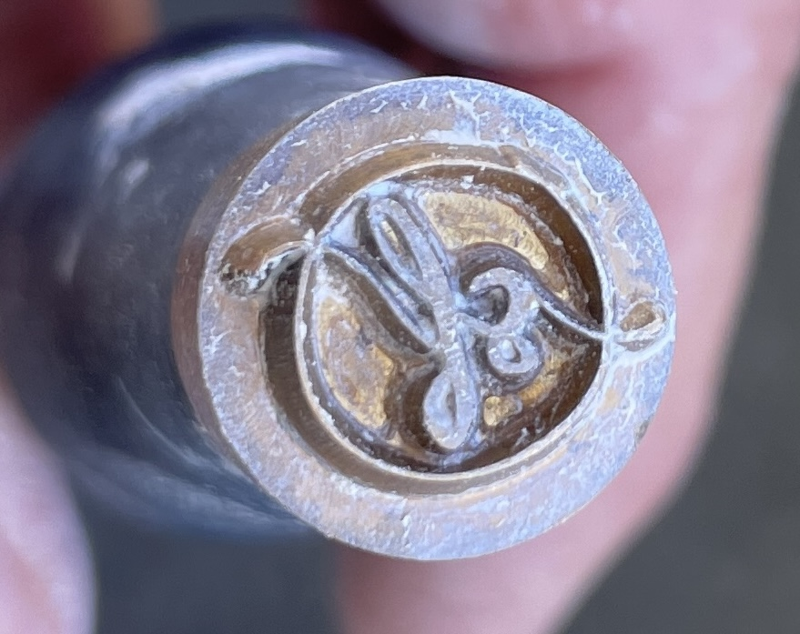

Keramik
Werkzeug & Erde
Jedes Gefäß beginnt als Klumpen Erde — formlos, schwer, von der Welt unberührt. Unter den Händen entfaltet es sich: langsam, im Aufbauen und Verdichten, geführt von einer Künstlerin, die nicht entscheidet, sondern begleitet.
Silvia arbeitet mit Steingut, Steinzeug und Porzellan. Die Glasuren — matt, mineralisch, manchmal unberechenbar — entstehen aus natürlichen Pigmenten und reagieren auf Temperatur wie auf Stimmung. Kein Stück gleicht dem anderen. Das Feuer hat das letzte Wort.
Gefäße können auf Anfrage erworben werden.

Aktuelle Arbeiten




Ton gibt die Möglichkeit, Veränderungen festzuhalten.Silvia Föger